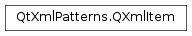

QXmlItem¶
Synopsis¶
Functions¶
- def
isAtomicValue() - def
isNode() - def
isNull() - def
toAtomicValue() - def
toNodeModelIndex()
Detailed Description¶
The
PySide2.QtXmlPatterns.QXmlItemclass contains either an XML node or an atomic value.In XQuery , all expressions evaluate to a sequence of items, where each item is either an XML node or an atomic value. The query in the following snippet evaluates to sequence of five items.
<Code snippet "/tmp/qt-doc-test-511/_qt5/qtbase/patternist/items.xq" not found>The five items are: An element, an atomic value (binary data encoded in base64), a date, a float, and an attribute.
PySide2.QtXmlPatterns.QXmlItemis the class that represents these XQuery items in the Qt XML Patterns API. A non-null instance ofPySide2.QtXmlPatterns.QXmlItemis either a node or an atomic value. CallingPySide2.QtXmlPatterns.QXmlItem.isNode()orPySide2.QtXmlPatterns.QXmlItem.isAtomicValue()tells you which it is. Atomic values are represented elsewhere in the Qt API as instances ofPySide2.QtCore.QVariant, and an instance ofPySide2.QtXmlPatterns.QXmlItemthat represents an atomic value can be converted to aPySide2.QtCore.QVariantby callingPySide2.QtXmlPatterns.QXmlItem.toAtomicValue(). APySide2.QtXmlPatterns.QXmlItemthat wraps a node is represented elsewhere as an instance ofPySide2.QtXmlPatterns.QXmlNodeModelIndex. A nodePySide2.QtXmlPatterns.QXmlItemcan be converted to aPySide2.QtXmlPatterns.QXmlNodeModelIndexby callingPySide2.QtXmlPatterns.QXmlItem.toNodeModelIndex().A default constructed
PySide2.QtXmlPatterns.QXmlIteminstance is neither a node nor an atomic value. It is considered null, in which casePySide2.QtXmlPatterns.QXmlItem.isNull()returns true.An instance of
PySide2.QtXmlPatterns.QXmlItemwill be left dangling if theXML node modelit refers to is deleted, if it is aPySide2.QtXmlPatterns.QXmlNodeModelIndex.
-
class
PySide2.QtXmlPatterns.QXmlItem¶ -
class
PySide2.QtXmlPatterns.QXmlItem(atomicValue) -
class
PySide2.QtXmlPatterns.QXmlItem(other) -
class
PySide2.QtXmlPatterns.QXmlItem(node) Parameters: - atomicValue – object
- node –
PySide2.QtXmlPatterns.QXmlNodeModelIndex - other –
PySide2.QtXmlPatterns.QXmlItem
Constructs a null
PySide2.QtXmlPatterns.QXmlItemthat is neither a node nor an atomic value.PySide2.QtXmlPatterns.QXmlItem.isNull()returns true for a default constructed instance.Constructs an atomic value
PySide2.QtXmlPatterns.QXmlItemwithatomicValue.The copy constructor constructs a copy of
other.Constructs a node
PySide2.QtXmlPatterns.QXmlItemthat is a copy ofnode.
-
PySide2.QtXmlPatterns.QXmlItem.isAtomicValue()¶ Return type: PySide2.QtCore.boolReturns true if this item is an atomic value. Returns false if it is a node or null.
-
PySide2.QtXmlPatterns.QXmlItem.isNode()¶ Return type: PySide2.QtCore.boolReturns true if this item is a Node. Returns false if it is an atomic value or null.
-
PySide2.QtXmlPatterns.QXmlItem.isNull()¶ Return type: PySide2.QtCore.boolReturns true if this
PySide2.QtXmlPatterns.QXmlItemis neither a node nor an atomic value. Default constructed instances ofPySide2.QtXmlPatterns.QXmlItemare null.
-
PySide2.QtXmlPatterns.QXmlItem.toAtomicValue()¶ Return type: object If this
PySide2.QtXmlPatterns.QXmlItemrepresents an atomic value, it is converted to an appropriatePySide2.QtCore.QVariantand returned. If thisPySide2.QtXmlPatterns.QXmlItemis not an atomic value, the return value is a default constructedPySide2.QtCore.QVariant. You can callPySide2.QtXmlPatterns.QXmlItem.isAtomicValue()to test whether the item is an atomic value.
-
PySide2.QtXmlPatterns.QXmlItem.toNodeModelIndex()¶ Return type: PySide2.QtXmlPatterns.QXmlNodeModelIndexIf this
PySide2.QtXmlPatterns.QXmlItemrepresents a node, it returns the item as aPySide2.QtXmlPatterns.QXmlNodeModelIndex. If thisPySide2.QtXmlPatterns.QXmlItemis not a node, the return value is undefined. You can callPySide2.QtXmlPatterns.QXmlItem.isNode()to test whether the item is a node.
© 2018 The Qt Company Ltd. Documentation contributions included herein are the copyrights of their respective owners. The documentation provided herein is licensed under the terms of the GNU Free Documentation License version 1.3 as published by the Free Software Foundation. Qt and respective logos are trademarks of The Qt Company Ltd. in Finland and/or other countries worldwide. All other trademarks are property of their respective owners.